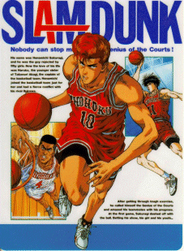

Slam Dunk

Table of Contents
|
Series Information
|
Gameboy Games
Game Gear Games
|
SNES Games
No information available at this time.
Other Resources
Anime Web Turnpike: Slam Dunk Links
Anime Video Game Resource Center © 1998 by
Luis A. Cruz